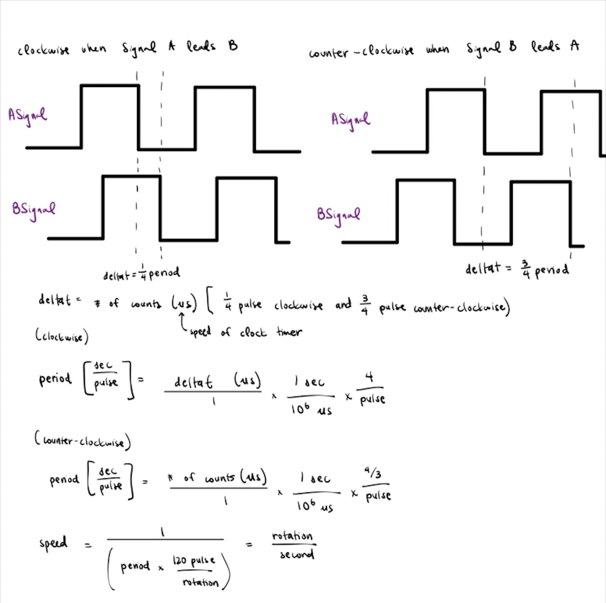
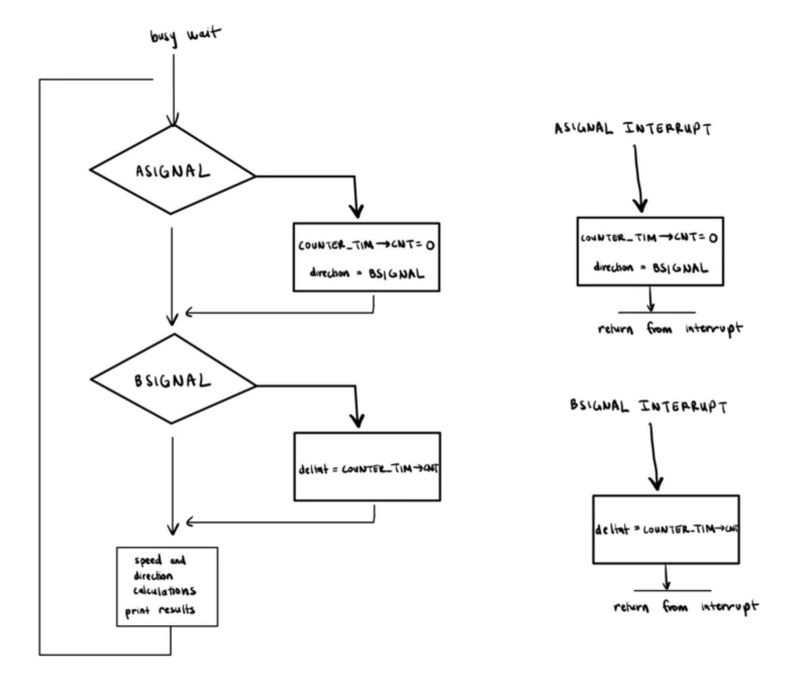
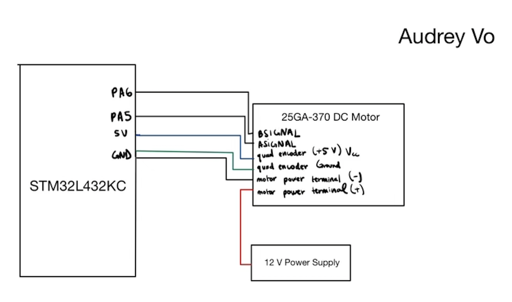
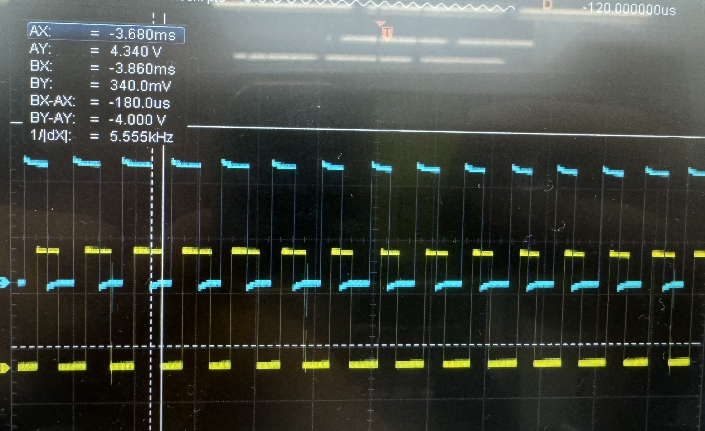
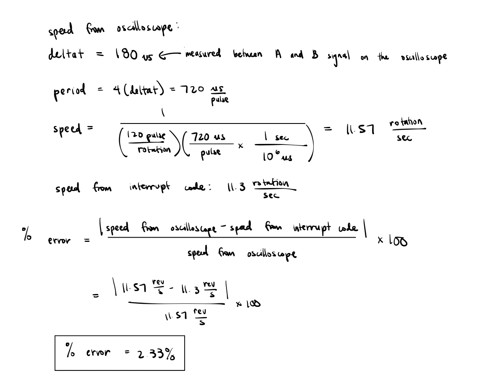

Lab 5: Interrupts
Number of Hours Spent on Lab: 12 hours
Main Goals
The main goals of this lab was to use the MCU to be able to display the velocity and direction of a motor by detecting the quadrature encoder pulses as an input. A multi-interrupt routine was implemented for the pulses returned by the encoder. This allowed for a velocity and direction to then be calculated by the results of the interrupt functions.
Design Approach
Interrupt Design
In order to design the code for the interrupts, a separate function for the Interrupt Handler was written in the main file. An External Interrupt was used to trigger the interrupt on the falling edge for the two different pulses outputted by the encoder. The two pulses were taken as an input to the MCU’s GPIO pins. A global variable was created that was updated with the time difference between the falling edge of the two inputs. The time difference was found by using a timer that counts at a speed of 1 MHz between when the interrupts are triggered. A separate timer was also created at 1 kHz to delay the printing of the motor speeds. The speed of the motor can then be found since the difference between the falling edge of the two inputs is known to be 1/4 of a pulse when it is going clockwise and 3/4 of a pulse when the motor is turning counter-clockwise.
We could determine the direction that the motor was spinning by checking if the B signal was high or low when the interrupt was triggered at the ASIGNAL’s falling edge. If the BSIGNAL is high when at the falling edge of the ASIGNAL, the motor is turning clockwise. Otherwise, the motor is running counter-clockwise.


Circuit Design
The circuit created consisted of an MCU, motor, and quadrature encoder. The pins used for this lab from MCU as inputs were verified to be 5V tolerant, and the motor was being driven by a 12V external power supply. The pins for the qudrature encoder signals were directly connected to the MCU input.
Pin Assignment
| variable | pin # |
|---|---|
| ASIGNAL | A5 |
| BSIGNAL | A6 |

Testing Approach
In order to test the design, I set the power supply because I knew that the expected behavior of the motor would be 10 rev/s. I also used an oscilloscope to measure the change in time of both encoder signal’s falling edge, and then solved for the speed to make sure it matched with the speed being displayed from the interrupt code.
 
Polling vs. Interrupt-Based Code
With code that requires polling, the calculations and signal processing is done in the while loop within the main function. This can be problematic for high speed codes because each of these commands take time, while the interrupt is completed immediately. Therefore, if the code is running at high speeds, the value that polling generates may be delayed and not match the actual current expected value. In contrast, interrupts will complete the set of commands immediately, and the next line of code of will not be executed until that command is completed. Thus, we are guaranteed with interrupts that the the results generated will be up to date and accurate.
Design Requirements
After testing the design on the oscilloscope and in real-life, I can confirm the design meets all specs.